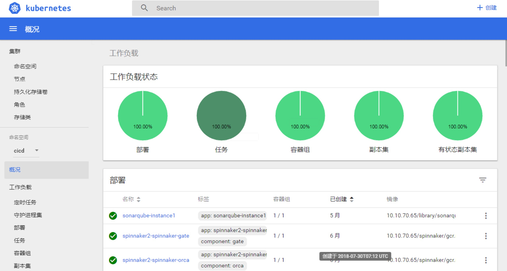
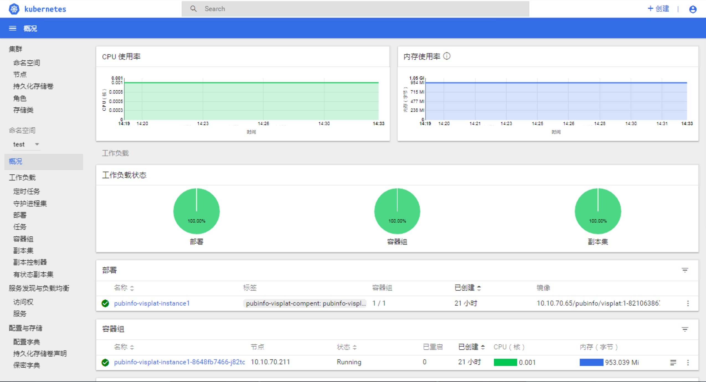

本目录下所有组件部署于kubernetes-v1.12.4版本，docker-18.06.1-ce版本
helm（集群资源部署管理工具）
内网部署，从下载的镜像包中将helm的镜像tiller导入到镜像仓库。
相关命令：
docker load < tiller.x.tar
docker push imagename:tag
因为内网环境没有网络，所以自己启动一个服务来进行安装
# 1.创建本地repo
mkdir -p /opt/helm-repo
# 2.启动helm repo server,如果要其他服务器访问，改为本地IP
nohup helm serve --address 127.0.0.1:8879 --repo-path /opt/helm-repo &
# 3.更改helm 配置文件
#将/etc/ansible/role/helm/default/main.yml中repo的地址改为 http://127.0.0.1:8879
cat <<EOF >/etc/ansible/role/helm/default/main.yml
helm_namespace: kube-system
helm_cert_cn: helm001
tiller_sa: tiller
tiller_cert_cn: tiller001
tiller_image: jmgao1983/tiller:v2.9.1
#repo_url: https://kubernetes-charts.storage.googleapis.com
repo_url: http://127.0.0.1:8879
EOF
# 4.运行安全helm命令
ansible-playbook /etc/ansible/role/helm/helm.yml
端口地址如果发生冲突请更换为闲置的，然后将helm的安装脚本，/role/default/main.yml中的景象地址改为仓库中的镜像10.10.70.65/*,如下图。


heapster（监控）
heapster也是一个监控集群的项目，使用它可以收集集群的指标。现在以promethus项目取代，但是配置heapster之后，在dashboard中可以看到资源的情况。
部署heapster只需要将镜像导入镜像库,修改部署的yaml中的镜像名称，然后执行manifast中的yaml文件即可。
kubectl create -f /etc/ansible/manifast/heapster/heapster.yaml
部署heapster的dashboard区别。

ingress（负载均衡，服务发现）
将down中的ingree-treafik镜像导入镜像仓库，使用manifast下的ingress-treafik.yaml文件部署，也可以参照网址：https://www.ilanni.com/?p=14501 部署另一种ingress->ingress-nginx。
traefik-ui.ing.yaml是treafik的web ui管理页面，部署后可以通过查询8080暴露出的服务进行nodeip：nodeport进行访问。
kubectl get svc -n kube-system |grep treafik
harbor（仓库）
harbor部署在docker目录下有，请尽量另选机器作为harbor节点，不要与k8s节点耦合，如果有在k8s节点上部署harbor的情况，请运行隔离语句将该节点隔离，禁止调度pod。
# 隔离节点，禁止pod调度
kubectl cordon nodename
# 恢复节点，pod可以调度
kubectl uncordon nodename
安装步骤
- 在deploy节点下载最新的 docker-compose 二进制文件，改名后把它放到项目
/etc/ansible/bin目录下（百度云的二进制文件中已包含）
wget https://github.com/docker/compose/releases/download/1.18.0/docker-compose-Linux-x86_64
mv docker-compose-Linux-x86_64 /etc/ansible/bin/docker-compose
- 在deploy节点下载最新的 harbor 离线安装包，把它放到项目
/etc/ansible/down目录下，也可以从分享的百度云盘下载 - 在deploy节点编辑/etc/ansible/hosts文件，可以参考
example目录下的模板，修改部分举例如下
# 参数 NEW_INSTALL=(yes/no)：yes表示新建 harbor，并配置k8s节点的docker可以使用harbor仓库
# no 表示仅配置k8s节点的docker使用已有的harbor仓库
# 如果不需要设置域名访问 harbor，可以配置参数 HARBOR_DOMAIN=""
[harbor]
[nodeip] HARBOR_DOMAIN="harbor.yourdomain.com" NEW_INSTALL=yes
- 在deploy节点执行
ansible-playbook /etc/ansible/11.harbor.yml，完成harbor安装和docker 客户端配置
如果对接已有集群NEW_INSTALL可以改为no
安装讲解
根据 11.harbor.yml文件，harbor节点需要以下步骤：
- role
prepare基础系统环境准备 - role
docker安装docker - role
harbor安装harbor
kube-node节点在harbor部署完之后，需要配置harbor的证书，并可以在hosts里面添加harbor的域名解析，如果你的环境中有dns服务器，可以跳过hosts文件设置
请在另外窗口打开 roles/harbor/tasks/main.yml，对照以下讲解
- 下载docker-compose可执行文件到$PATH目录
- 自注册变量result判断是否已经安装harbor，避免重复安装问题
- 解压harbor离线安装包到指定目录
- 导入harbor所需 docker images
- 创建harbor证书和私钥(复用集群的CA证书)
- 修改harbor.cfg配置文件
- 启动harbor安装脚本
验证harbor
- 在harbor节点使用
docker ps -a查看harbor容器组件运行情况 浏览器访问harbor节点的IP地址
https://$NodeIP，使用账号 admin 和 密码 Harbor12345 (harbor.cfg 配置文件中的默认)登陆系统k8s中使用harbor
如果镜像保存在harbor中的公开项目中，那么只需要在yaml文件中简单指定harbor私有镜像即可，例如
apiVersion: v1
kind: Pod
metadata:
name: test-busybox
spec:
containers:
- name: test-busybox
image: harbor.test.com/xxx/busybox:latest
imagePullPolicy: Always
- 如果镜像保存在harbor中的私有项目中，那么yaml文件中使用该私有项目的镜像需要指定
imagePullSecrets，例如
apiVersion: v1
kind: Pod
metadata:
name: test-busybox
spec:
containers:
- name: test-busybox
image: harbor.test.com/xxx/busybox:latest
imagePullPolicy: Always
imagePullSecrets:
- name: harborkey1
其中 harborKey1可以用以下两种方式生成：
- 1.使用
kubectl create secret docker-registry harborkey1 --docker-server=harbor.test.com --docker-username=admin --docker-password=Harbor12345 --docker-email=team@test.com - 2.使用yaml配置文件生成
//harborkey1.yaml
apiVersion: v1
kind: Secret
metadata:
name: harborkey1
namespace: default
data:
.dockerconfigjson: {base64 -w 0 ~/.docker/config.json}
type: kubernetes.io/dockerconfigjson
前面docker login会在~/.docker下面创建一个config.json文件保存鉴权串，这里secret yaml的.dockerconfigjson后面的数据就是那个json文件的base64编码输出（-w 0让base64输出在单行上，避免折行）
管理harbor
- 日志目录
/var/log/harbor - 数据目录
/data，其中最主要是/data/database和/data/registry目录，如果你要彻底重新安装harbor，删除这两个目录即可
先进入harbor安装目录 cd /data/harbor，常规操作如下：
- 暂停harbor
docker-compose stop: docker容器stop，并不删除容器 - 恢复harbor
docker-compose start: 恢复docker容器运行 - 停止harbor
docker-compose down -v: 停止并删除docker容器 - 启动harbor
docker-compose up -d: 启动所有docker容器
修改harbor的运行配置，需要如下步骤：
# 停止 harbor
docker-compose down -v
# 修改配置
vim harbor.cfg
# 执行./prepare已更新配置到docker-compose.yml文件
./prepare
# 启动 harbor
docker-compose up -d
harbor 升级
以下步骤基于harbor 1.1.2 版本升级到 1.2.2版本
# 进入harbor解压缩后的目录，停止harbor
cd /data/harbor
docker-compose down
# 备份这个目录
cd ..
mkdir -p /backup && mv harbor /backup/harbor
# 下载更新的离线安装包，并解压
tar zxvf harbor-offline-installer-v1.2.2.tgz -C /data
# 使用官方数据库迁移工具，备份数据库，修改数据库连接用户和密码，创建数据库备份目录
# 迁移工具使用docker镜像，镜像tag由待升级到目标harbor版本决定，这里由 1.1.2升级到1.2.2，所以使用 tag 1.2
docker pull vmware/harbor-db-migrator:1.2
mkdir -p /backup/db-1.1.2
docker run -it --rm -e DB_USR=root -e DB_PWD=xxxx -v /data/database:/var/lib/mysql -v /backup/db-1.1.2:/harbor-migration/backup vmware/harbor-db-migrator:1.2 backup
# 因为新老版本数据库结构不一样，需要数据库migration
docker run -it --rm -e DB_USR=root -e DB_PWD=xxxx -v /data/database:/var/lib/mysql vmware/harbor-db-migrator:1.2 up head
# 修改新版本 harbor.cfg配置，需要保持与老版本相关配置项保持一致，然后执行安装即可
cd /data/harbor
vi harbor.cfg
./install.sh